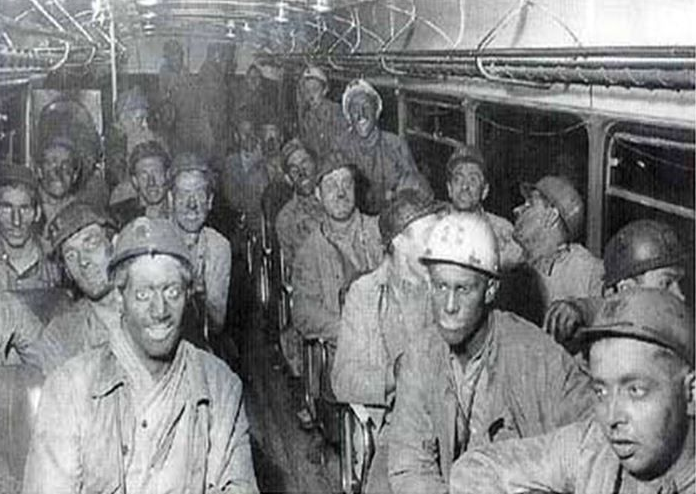
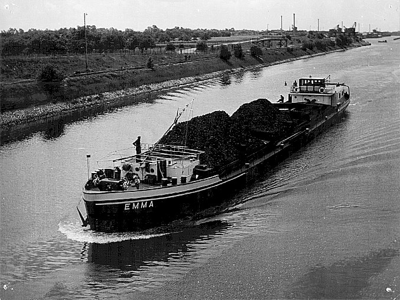
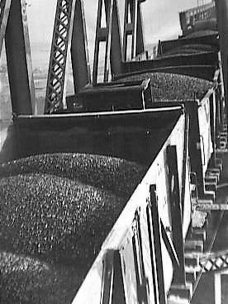

Voordat de mijnwerker aan zijn dienst begon, had hij soms al een lange reis achter de rug. Mijnwerkers uit de stad of omliggende dorpen komen te voet of met de fiets naar hun werk. Woon je wat verder weg, dan word je opgehaald door de bedrijfsbus. De bus heeft een vaste route, woon je aan het begin van de route, dan heb je pech. De reis kan meer dan een uur duren. Sommigen komen zelfs uit Noord-Brabant. Vanaf de jaren vijftig werden ook de bromfietsen door sommige mijnwerkers gebruikt.  De werkzaamheden worden uitgevoerd in drie ploegen. Ochtendploeg, lunchploeg en avondploeg. In tegenstelling tot vandaag was het werk in zes dagen geklaard. Je werkt acht uur per dag en zes uur op zaterdag, maar je salaris is acht uur. Hoewel Limburg al lange tijd steenkool wint, begon het "moderne steenkooltijdperk" pas rond 1900. Steenkool werd vervolgens een belangrijk onderdeel van de industrie. Hoe sneller de mijnen groeien, hoe sneller ze verdwijnen. De laatste kolenmijn in Limburg sloot in 1974. Steenkool, van pijler tot klant Steenkool wordt door mijnwerkers gewonnen in zogenaamde pijlers (gangen in steenkoollagen). Hiervoor gebruikte hij een persluchthamer of bediende hij een mechanisch kolenvliegtuig. In 1952 bedroeg de totale kolenproductie van alle kolenmijnen in Limburg meer dan 10 miljoen ton. Deze enorme kolen bereiken de consument rechtstreeks via de groot- en detailhandel. Brandstofhandel speelt een belangrijke rol in de verkoop. Tijdens de zomermaanden maakten handelaren een inventarisatie, waardoor het in deze periode ook mogelijk was om kolen uit mijnbouwbedrijven te halen. In de koude winter worden deze voorraden gebruikt om de klanten van brandstof te blijven voorzien. De familie slaat ook goederen in huis voor de winter. Ten opzichte van de Nederlandse markt is Zuid-Limburg behoorlijk nadelig. Er zijn wegen, spoorwegen, waterwegen en havens aangelegd waardoor mijnbouwbedrijven kolen gaan vervoeren naar industriegebieden en steden in Nederland. Het Julianakanaal is aangelegd voor het vervoer van kolen, deze 35 kilometer lange vaarweg staat in verbinding met de belangrijkste vaarwegen in Nederland. De haven van Stein is gebouwd door  Staatsmijnen aan het Julianakanaal. De Nederlandse Spoorwegen bouwden een tweede haven in Bonn. In 1961 werden in Stein meer dan 7.300 schepen geladen en gelost. Na Duisburg (Duitsland) werd de haven van Stein destijds de grootste binnenhaven van West-Europa! In Sostrom vestigde een dorp in Midden-Limburg een van de grootste overslagstations van Nederland. Op dit station, dat dag en nacht noordwaarts rijdt, staat een lange kolenwagen opgesteld. 46 locomotieven zijn in gebruik bij de National Railway Expeditionary Company.  In Amsterdam en Rotterdam heeft Staatsmijnen een eigen zeeschip en internationaal binnenvaartlaadbedrijf. Er werd een extra spoorlijn aangelegd voor het dagelijks vervoer van mensen. Dit kreeg de naam "Miljoenenlijntje" omdat de gebouwen die door het heuvelachtige gebied liepen meer dan een miljoen gulden per kilometer kosten. Rond 1930 waren deze aantallen natuurlijk enorm.